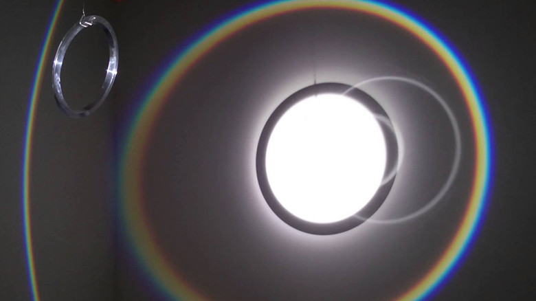

minimal

Olafur Eliasson
https://www.youtube.com/watch?v=cehJIdntD-w-どんな人
アイスランドの芸術家。光や虹といった自然のものを利用したインスタレーション作品を多く作っています。
-解説
白い壁に囲まれた部屋の中心に円形のプリズムが吊り下げられています。そのプリズムに光を照射して回転させることで、虹の円がぐにゃぐにゃまがりながら、だんだん開いた形になっていきます。部屋の中心にいると、虹がぐーっと曲がりながら自分の周りを回って行くので、不思議な感覚に浸れるインスタレーション作品です。
-好きなところ
プリズムの輪っかを一つ吊り下げて光を当てて回転させるだけ、というシンプルなところが好きです。